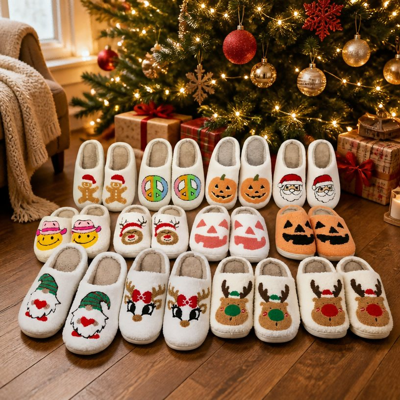
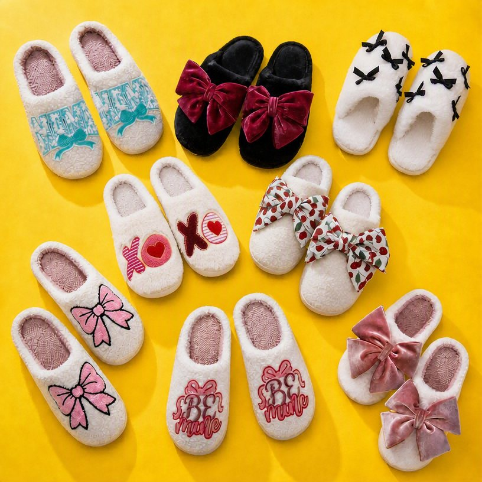
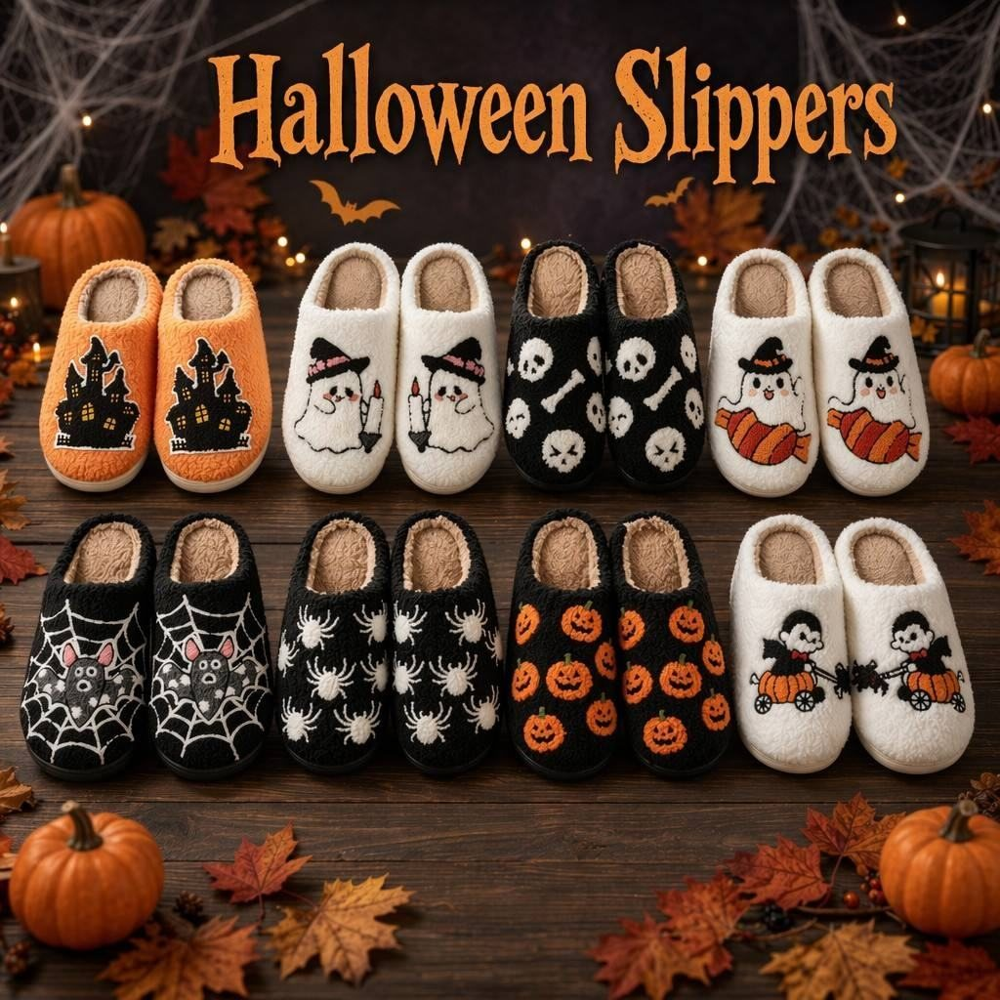
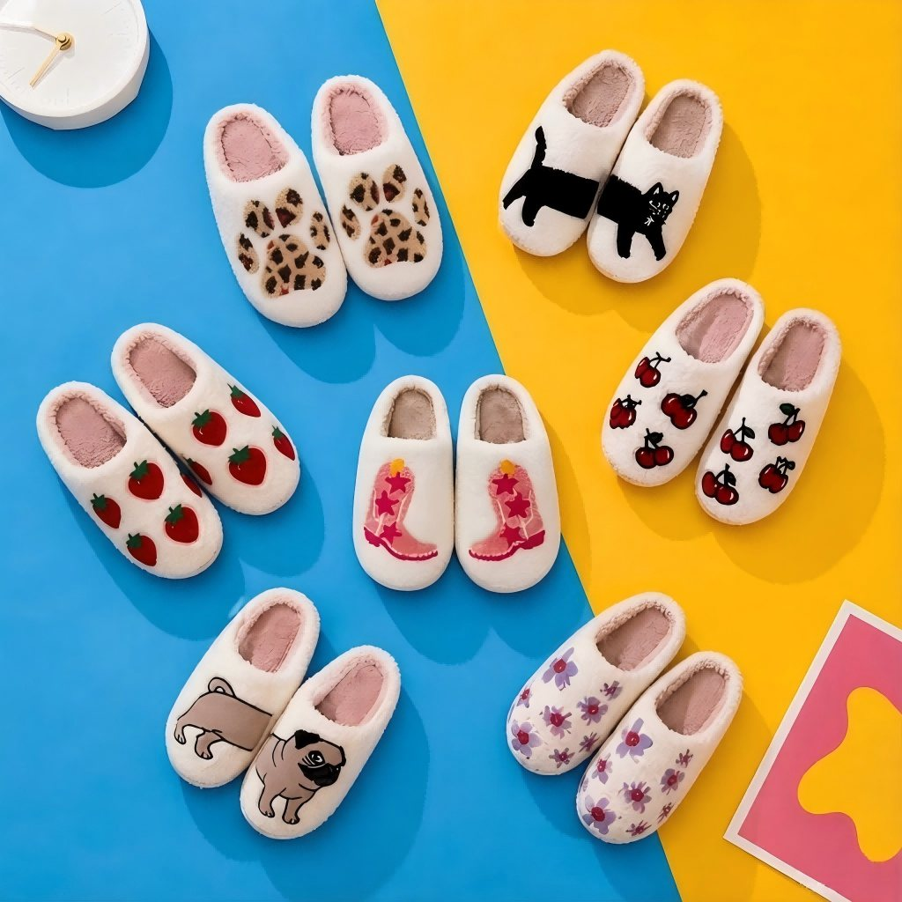

Pantuflas de chenilla temáticas para fiestas y eventos, construidas para minoristas, marcas DTC y programas de sets de regalo. Halloween, Navidad, San Valentín y bordado completamente personalizado — muestras en 7 días, MOQ 500 pares, DDP a su puerta.

Cada colección está diseñada para una ventana de compra, un cliente objetivo y un rango de precio. Combine colecciones, o envíenos su propio diseño — cada par se teje a mano en nuestro taller de Ningbo.

Corazón, moño, mariposa y "Be Mine" — para programas de regalo, boutique y paquetes de San Valentín.
Ver detalles →
Calabaza, fantasma, murciélago, calavera, telaraña — para lanzamientos de Halloween, fiestas y paquetes temáticos.
Ver detalles →Santa, reno, galleta de jengibre, muñeco de nieve — para sets de regalo, retail festivo y regalos corporativos.
Ver detalles →
Leopardo, gato, fresas, cerezas, pug, flores. Para líneas retail de todo el año, sets de regalo y regalos casuales.
Ver detalles →Bordado de moño, mariposa, corazón y texto personalizado. Diseñadas para programas de regalo, boutique y paquetes de San Valentín — tejidas a mano en nuestro taller de Ningbo.
Calabaza, fantasma, murciélago, calavera, telaraña, sombrero de bruja. Pantuflas espeluznantes de temporada tejidas a mano para lanzamientos de Halloween, fiestas y sets de regalo temáticos.
Leopardo, gato, fresas, cerezas, botas vaqueras, pug, flores — la línea cute del día a día que vende los 12 meses del año. Sin ventana pico, sin temporada baja, solo rotación constante para retail, sets de regalo y regalos casuales.
Los programas de temporada tienen su propio ritmo — muestra en verano, envío a mid-Noviembre, restock en enero. Nuestro taller está construido alrededor de ese ciclo.
Muestra 90 días antes del pico. Producción 60 días antes. Abrimos cupos Q4 cada julio y protegemos capacidad para compradores comprometidos.
De calabaza a reno. Combine colecciones o encargue un diseño completamente personalizado. Opciones llave en mano y a medida.
Caja de regalo, cinta, etiqueta, tarjeta de cuidado y bolsa personalizadas. Manejamos el armado para que sus pantuflas lleguen listas para estante o Amazon FBA.
Envío DDP a EE.UU., UE, Reino Unido, AU, CA. La mayoría de pedidos llegan 15–25 días antes de la fecha pico — buffer incluido.
OEKO-TEX Standard 100, BSCI, Sedex, Prop 65, CE/CPC, materiales aprobados por FDA. Toda la documentación se entrega antes del envío.
Los pedidos repetidos cuestan menos y se envían más rápido. Conservamos sus archivos de diseño y especificaciones de color por 12+ meses para reordenes rápidos.
Estos son los tiempos que los compradores bloquean en nuestros programas de temporada. Si necesita una fecha de entrega, trabaje hacia atrás desde aquí.
Muestra 7d · Bulk 25–35d · Envío antes de finales de dic para pico de feb
Muestra 7d · Bulk 25–35d · Envío antes de mid-Sep para pico de oct
Muestra 7d · Bulk 25–35d · Envío antes de mid-Nov para pico de dic
Muestra 7d · Bulk 25–35d · Sin ventana pico — pedir en cualquier momento
Díganos qué temporada, qué motivo y su fecha objetivo de entrega. Le responderemos con un plan de muestra y cotización en 24 horas.